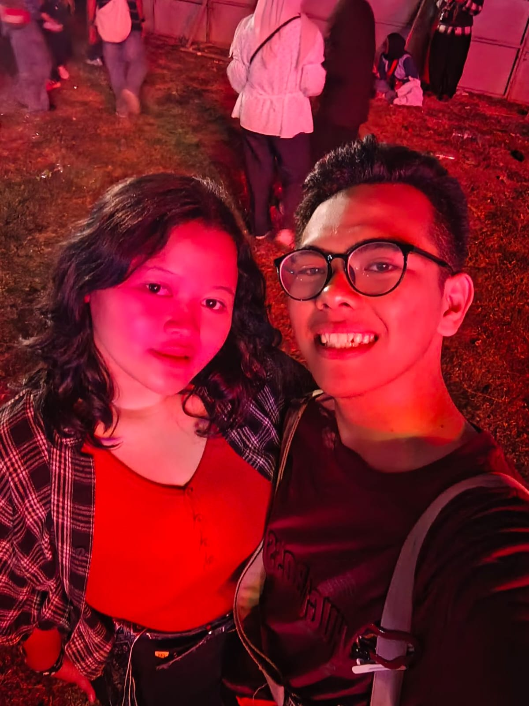
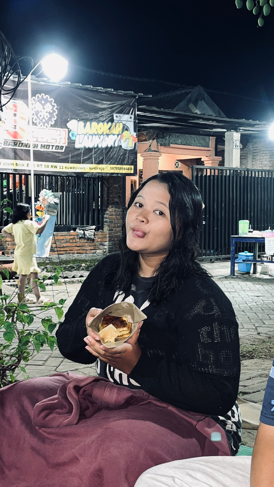
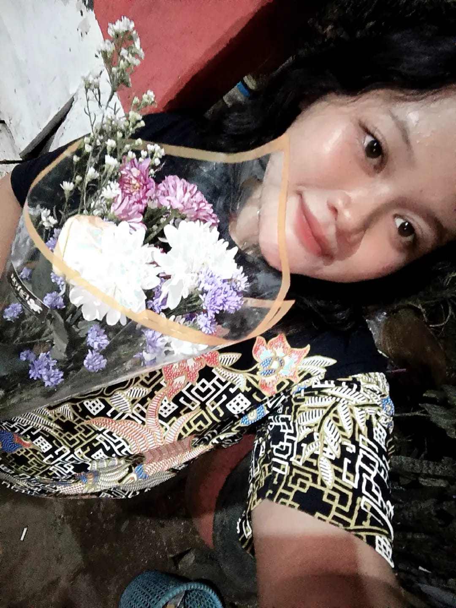
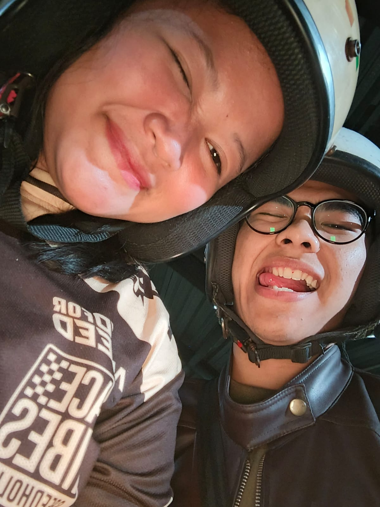
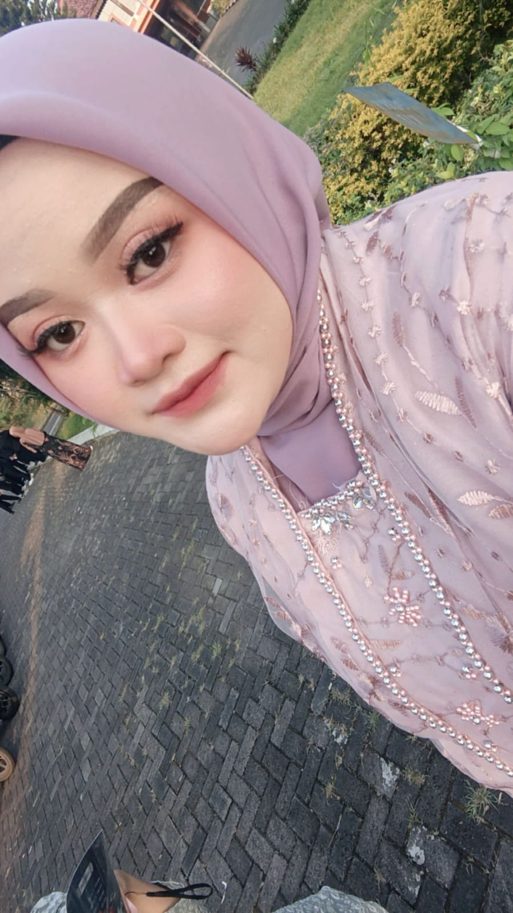

Bertumbuh 19 usia sayangku
Putar lagu ini sambil membaca ♫
Sebelum lanjut, mungkin kata-kata ini hanyalah pemanis di siang bolong (entah kamu buka jam berapa). Hai sayang, cerminan hidupku, kompas tanpa panah penanda. Selamat telah berusia 19 tahun, dan hanya sedikit kado dariku, sayangmu.

Bagai bintang di siang hari
Menunggu gelapnya malam
Untuk bersinar, indah terpancar
Ketuk polaroid



Mungkin surat ini hanya bisa dibaca
dilihat dan disenangi sesaat
Tetapi kenangan ini kekal menyertaimu
Ketuk polaroid
Semoga ia selalu ada di pikiran,
hati nurani, dan pancaran matamu
Ketuk polaroid
